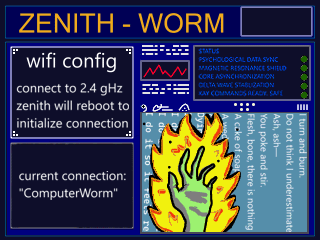

ZENITH-Worm
June3, 2025
Wifi Configurator

I programmed this keyboard in the most brutish way possible without using any arrays or idexs, and no I'm not going to elaborate on that lol. HOWEVER, it is very much funtional and actually works remarkably well. The controls I set to a simple up/down/left/right using 8/2/4/6 buttons. This moves a little animated leaf selector. 5 enters in your currently selected letter, and adds that letter to the string variable displayed on the screen. I set 0 as a spacebar and 7 as a backspace. Lastly when you hit Ent key it takes the string variable and writes it to a text file. Next it clears out the string variable and now you can enter the wifis password. When enter is hit for the second time, my script opens a config file found in /etc/wpa_supplicant and adds in a text block containing the information you entered on the keyboard and properly formats it. Now a quick reboot and the pi connects to that network.
I designed my keyboard to be multi-purpose. Not just for connecting to wifi. The text at the top "Enter ssid" is actually a string read from that same text file. What this allows me to do is change what it says depending on which program opens the keyboard script.
In the future for example I would like to make a program to utilize this keyboard to send commands to the terminal. So when you select my terminal script from the main menu the first thing it will do is edit the text file for keyboard title, and then launch the keyboard itself. Pretty nifty I think

connors status update:
I wrote this when I was running Rasbian OS version "bullseye" but since upgrading to "bookworm" theyve completely changed how wifi is managed. It can all be done with terminal commands now I'm pretty sure, but I think theres still a sort of
.config file I can edit but I've been more interested in other things to get it back working. Anyways, either way it's not a big deal since I have my pi auto-connect to my phones hotspot which I pretty much always have on me anyways. I'll maybe get this going liked
I intended but might just end up repurposing it/making my own little terminal for my screen here with the keyboard